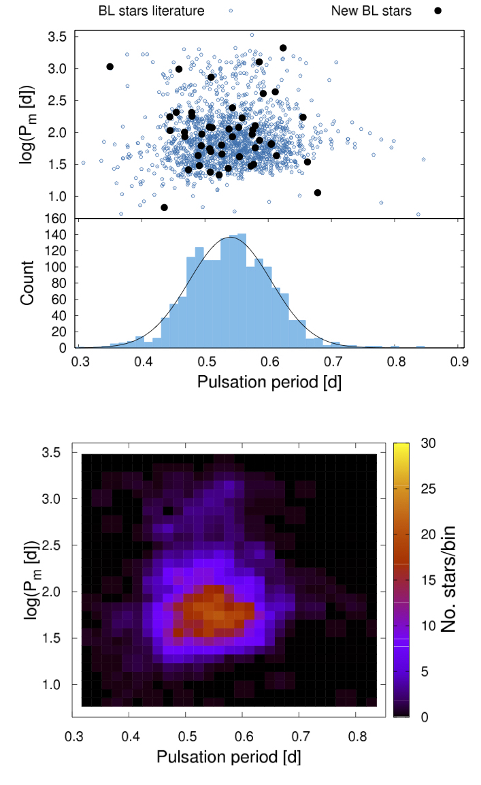

PI: Róbert Szabó
In this project we aim at studying recently discovered nonlinear dynamical phenomena of classical pulsating variable stars. This project is enabled by the achievements of the latest space photometric technology. We investigate resonances, modulation and mode interaction of RR Lyrae stars and Cepheids – all discovered by our group recently, the origin of gamma Doradus – delta Scuti hybrids, as well as effects of binarity on pulsation. For our work we use ultra-precise and continuously sampled space photometric data from the Kepler (K2) and MOST space telescopes – stemming from our approved telescope time applications, state-of-the-art time-frequency and chaos detection methods, the Florida-Budapest hydrodynamical pulsation code and the amplitude equation formalism. We expect a better understanding of the new phenomena and the evolution of pulsating variable stars, as well as the exploration of these systematic effects on the calibration of the cosmic distance scale. The principal investigator has been the leader of the Cepheid and RR Lyrae Working Group in the Kepler Asteroseismic Science Consortium. This proposal enables us to play a similar role in NASA's TESS exoplanet-hunter mission, which is scheduled to launch in 2018. The research is backed up by an outstanding team of scientists: we exploit our expertise in space photometry and spectroscopy, our leading role in the Kepler mission, and the team's decades-long experience in numerical modelling of stellar pulsation. This synergy places our research in the forefront of present-day astrophysical studies.
Project no. 115709 has been implemented with the support provided from the National Research, Development and Innovation Fund of Hungary, financed under the K_16 funding scheme.
+ Róbert Szabó - PI
+ László L. Kiss
+ József M. Benkő
+ Emese Plachy
+ Marek Skarka
+ Zsófia Bognár
+ Ádám Sódor
+ László Szabados
+ Zoltán Kolláth
+ Attila Bódi
+ Adrienn Forró
+ Tamás Hajdu
+ Gyula M. Szabó
+ Pál Szabó
+ Aliz Derekas
+ Mónika Jurkovic
Former participants: + László Molnár
+ Péter Klagyivik
+ Áron Juhász
+ Ottó Hanyecz
+ Gergely Dálya
8. Chaotic dynamics in the pulsation of DF Cygni (paper)
Pulsations of RV Tauri-type variable stars can be governed by chaotic dynamics. However, observational
evidence for this happening is usually hard to come by. We use the continuous, 4-yr-long observations of
the Kepler space telescope to search for the signs of chaos in the RVb-type pulsating supergiant, DF Cygni.
We used the Global Flow Reconstruction method to estimate the quantitative properties of the dynamics driving
the pulsations of the star. The secondary, long-term light variation, i.e. the RVb phenomenon, was removed in
the analysis with the empirical mode decomposition method. Our analysis revealed that the pulsation of DF Cyg
could be described as a chaotic signal with a Lyapunov dimension of 2.8. DF Cyg is only the third RV Tau
star, and the first of the RVb subtype, where the non-linear analysis indicates that low-dimensional chaos
may explain the peculiarities of the pulsation.
Different realizations of the three versions of light curves (from top to bottom) that were used
in Global Flow Recosn. Left: time series (in relative magnitude), middle : Fourier transforms, right:
Broomhead-King projections. The Fourier transforms only show the low-amplitude range, while the main peak extends
beyond the plot. Plachy et al. (2018).
7. Validating the classification of Kepler/K2 RR Lyrae and Cepheid variables with Gaia (paper)
We investigated the purity and completeness of the all-sky Gaia classification results with the help of the
continuous light curves of the observed targets from the Kepler and K2 missions, focusing specifically on
RR Lyrae and Cepheid pulsators, outside the Galactic bulge region. We cross-matched the Gaia identifications
with the observations collected by the Kepler space telescope. We inspected the light curves visually, then
calculated the relative Fourier coefficients and period ratios for the single- and double-mode K2 RR Lyrae
stars to further classify them. We identified 1443 and 41 stars classified as RR Lyrae or Cepheid variables in
Gaia DR2 in the targeted observations of the two missions and 263 more RR Lyre targets in the full-frame images
(FFI) of the original mission. We conclude that the RR Lyrae catalogue has a completeness between 70-78%, and
provide a purity estimate of between 92 and 98% (targeted observations) with lower limits of 75% (FFI stars)
and 51% (K2 worst-case scenario). The purity of the DR2 Cepheid sample is estimated to be about 66%.
Distribution of the Gaia DR2 RR Lyrae candidates confirmed by the Kepler (targeted and FFI) and
K2 measurements in the sky. The thick line in light blue marks the Galactic equator, and the colour-coding
shows the number of Gaia FoV transits in the G band per star. The original Kepler field is the northernmost
group of stars at RA ≈ 300 deg. Molnár et al. (2018).
7. New white dwarfs in the TESS fields (paper)
We conducted a survey to search for new white dwarf pulsators for observations by the TESS space telescope.
We collected photometric time-series data on 14 white dwarf variable candidates at Konkoly Observatory, and
found two new bright ZZ Ceti stars, namely EGGR 120 and WD 1310+583. In the case of EGGR 120, which was observed
on one night only, we found one significant frequency
at 1332 μHz with 2.3 mmag amplitude. We successfully observed WD 1310+583 on eight nights, and determined 17
significant frequencies in the whole dataset. Seven of them seem to be independent pulsation modes between
634 and 2740 μHz, and we performed preliminary asteroseismic investigations of the star utilizing six of
these periods. We also identified three new light variables on the fields of white dwarf candidates: an
eclipsing binary, a candidate delta Scuti/beta Cephei and a candidate W UMa-type star.
Normalized differential light curves of WD 1310+583 observed at the Piszkéstető Observatory.
Bognár et al. (2018).
6. Mathematical description of the Blazhko phenomenon (paper)
We proved that the mathematical form that most precisely describes the Blazhko RR Lyrae light curves is
connected to almost periodic functions and not to the mathematics of modulation. That is, the Blazhko
effect is more than a simple external modulation of the pulsation signal. The mathematical framework of
almost periodic functions predicts a new observable effect: a shift of the Fourier harmonics of the main
pulsation frequency from the exact harmonic position. This phenomenon is called the harmonic detuning effect
(HDE). The published deviations of the harmonics of V445 Lyr are explained by this effect. The HDE is also
found for V2178 Cyg, which is another Blazhko star observed by the Kepler space telescope. The HDE is
detectable only if the phase variation part of the Blazhko effect is of large amplitude and non-periodic
enough and, additionally, if the time-span of the observed light curve is sufficiently long for obtaining
precise frequencies. These three conditions restrict the number of stars showing detectable HDE and explain
why this effect has not been discovered up to now.
5. New insights into the RV Tauri (RVb) phenomenon (paper)
RV Tauri-type variables are pulsating post-asymptotic giant branch (AGB) stars that evolve rapidly through
the instability strip after leaving the AGB. Their light variability is dominated by radial pulsations. Members
of the RVb subclass show an additional variability in the form of a long-term modulation of the mean brightness,
for which the most popular theories all assume binarity and some kind of circumstellar dust.
We found a surprisingly uniform correlation between the pulsation amplitude and the mean flux; they scale
linearly with each other for a wide range of fluxes and amplitudes. This means that the pulsation amplitude
actually remains constant when measured relative to the system flux level. We demonstrated that when fluxes
are used instead of magnitudes, the amplitude attenuation is naturally explained by periodic obscuration
from a large opaque screen, one most likely corresponding to a circumbinary dusty disk that surrounds the
whole system.
A gallery of RVb light curves compiled from various sources. Kiss & Bódi (2017).
4. KIC 2831097 - a 2-yr-orbital-period RR Lyrae binary candidate (paper)
We reported the discovery of a new Kepler first-overtone RR Lyrae pulsator, KIC 2831097. The pulsation shows
large amplitude, systematic phase variations that can be interpreted as light traveltime effect caused by
orbital motion in a binary system, superimposed on a linear pulsation-period decrease. The assumed eccentric
orbit with the period of ≈2 yr is the shortest among the non-eclipsing RR Lyrae binary candidates. The binary
model gives the lowest estimate for the mass of the companion of 8.4 solar masses, that places it among black hole
candidates. Beside the first-overtone pulsation, numerous additional non-radial pulsation frequencies were also
identified. We detected a Blazhko-like irregular light-curve modulation, as well.
The O−C diagram of KIC 2831097. Top: data fitted with constant period decrease (blue dashed curve),
and the superimposed orbital light-delay variations (red continuous curve). Second panel: the data after the
parabolic variation are subtracted, with the fitted orbital variation (continuous curve). Third panel: final
residuals. Bottom: relative pulsation amplitude. Sódor et al. (2017).
3. First detection of the granulation in a Cepheid (paper)
This is a detailed analysis of the bright Cepheid-type variable star V1154 Cygni using four years of continuous
observations by the Kepler space telescope. We identified modulation of the main pulsation frequency and its harmonics with a period of ∼159 d.
We detected another modulation with a period of about 1160 d. The star also shows significant power in the low-frequency
region that we identified as granulation noise. The effective time-scale of the granulation agrees with the
extrapolated scalings of red giant stars. Non-detection of solar-like oscillations indicates that the pulsation
inhibits other oscillations. We obtained new radial velocity observations that are in a perfect agreement with
previous years data, suggesting that there is no high-mass star companion of V1154 Cygni.
2. An investigation of the RR Lyrae modulation-period distribution (paper)
We studied 1234 fundamental mode RR Lyrae stars observed by the All Sky Automated Survey (ASAS)
to identify the Blazhko (BL) effect. A sample of 1547 BL stars from the literature was collected to
compare the modulation-period distribution with stars newly identified in our sample.
We found that pulsation periods of BL stars follow Gaussian distribution with the mean period
of 0.54 ± 0.07 d, while the modulation periods show log-normal distribution with centre at log
(Pm [d]) = 1.78 ± 0.30 dex. This means that 99.7% of all known modulated stars have BL periods between
7.6 and 478 days.

Blazhko period as a function of the pulsation period for known and new modulated stars (top),
and the corresponding density plot (bottom). The bottom part of the top panel shows the
distribution of pulsation periods. Skarka et al. (2016).
1. Discovery of the most distant Blazhko RR Lyrae stars (paper)
We presented the first observations of extragalactic pulsating stars in the K2 ecliptic survey of
the Kepler space telescope. The variability of all three RR Lyrae stars in the dwarf spheroidal
galaxy Leo IV was successfully detected, at a brightness of Kp ≈ 21.5 mag, from data collected
during Campaign 1. We identified one modulated star and another likely Blazhko candidate with
periods of 30 days and more than 80 days, respectively. EPIC 210282473 represents the first star
beyond the Magellanic Clouds for which the Blazhko period and cycle-to-cycle variations in the
modulation were unambiguously measured.
Light curves of the three RR Lyrae stars in Leo IV observed by K2. Left panels: light
curves after outlier removal and Fourier filtering. Note the variable amplitude of EPIC 210282473 in
the middle panel. The right panels show the folded light curves (pink dots and lines) and the binned
phase curves (black points). Molnár et al. (2015).
52. L. Rimoldini, B. Holl, ..., L. Molnár, E. Plachy, Á. Juhász, L. Szabados, et al:
Gaia Data Release 2: All-sky classification of high-amplitude pulsating stars
A&A, submitted, 2019, arXiv:1811.0391951. A. Bischoff-Kim, J. L. Provencal, P. A. Bradley, ..., Zs. Bognár, Castanheira, B. G.:
GD358: three decades of observations for the in-depth asteroseismology of a DBV star
ApJ, accepted, 2019, arXiv:1810.1170850. Zs. Bognár, ..., Á. Sódor, ..., L. Molnár, ..., E. Plachy, et al.:
Wandering near the red edge: photometric observations of three cool ZZ Ceti stars
MNRAS, 482, 4018, 201949. E. Plachy, A. Bódi, Z. Kolláth:
Chaotic dynamics in the pulsation of DF Cygni, as observed by Kepler
MNRAS, 481, 2986, 201848. R. Smolec, P. Moskalik, E. Plachy, I. Soszyński, A. Udalski:
Diversity of dynamical phenomena in type II Cepheids of the OGLE collection
MNRAS, 481, 3724, 201847. Á. Kóspál. P. Ábrahám, G. Zsidi, K. Vida, R. Szabó, A. Moór, A. Pál:
Spots, flares, accretion, and obscuration in the pre-main sequence binary DQ Tau
ApJ, 862, 44, 201846. M. Jurkovic:
Anomalous Cepheids Discovered in a Sample of Galactic Short Period Type II Cepheids
Serbian Astronomical Journal, in press, 201845. L. Molnár, E. Plachy, Á. L. Juhász, L. Rimoldini:
Gaia Data Release 2: Validation of the classification of RR Lyrae and Cepheid variables with the Kepler and K2 missions
A&A, 620, A127, 201844. K. Sziládi, J. Vinkó, L. Szabados:
Metallicity Estimates for Double-Mode Cepheids from Photometry
AcA, 68, 111, 201843. Zs. Bognár, Cs. Kalup, Á. Sódor, S. Charpinet, J. J. Hermes:
Searching for new white dwarf pulsators for TESS observations at Konkoly Observatory
MNRAS, 478, 2676, 201842. G. Clementini, V. Ripepi, R. Molinaro, ..., L. Szabados et al.:
Gaia Data Release 2: Specific characterisation and validation of all-sky Cepheids and RR Lyrae stars
A&A, submitted, 2018, arXiv:1805.0207941. Gaia Collaboration, L. Eyer, ..., Á. Juhász, ..., L. Molnár, ..., E. Plachy, ..., L. Szabados et al.:
Gaia Data Release 2. Variable stars in the colour-absolute magnitude diagram
A&A, submitted, 2018, arXiv:1804.0938240. B. Holl, ..., Á. Juhász, ..., L. Molnár, ..., E. Plachy, ..., L. Szabados et al.:
Gaia Data Release 2. Summary of the variability processing & analysis results
A&A, 618, A30, 201839. Gaia Collaboration, C. Babusiaux, ..., Á. Juhász, ..., L. Molnár, ..., E. Plachy, ..., L. Szabados et al.:
Gaia Data Release 2. Summary of the contents and survey properties
A&A, 616, A1, 201838. Gaia Collaboration, A. G. A. Brown, ..., Á. Juhász, ..., L. Molnár, ..., E. Plachy, ..., L. Szabados et al.:
Gaia Data Release 2. Observational Hertzsprung-Russell diagrams
A&A, 616, A10, 201837. M. Paparó, Z. Kolláth, ..., J. Benkő, , ..., Zs. Bognár, Á. Sódor et al.:
The Delta Scuti star 38 Eri from the ground and from space
MNRAS, 477, 4362, 201836. Sz. Mészáros, D. A. García-Hernández, S. Cassisi, ..., A. Derekas, et al.:
A Photometric Study of Globular Clusters Observed by the APOGEE Survey
MNRAS, 475, 1633, 201835. R. Silvotti, ..., M. Paparó, L. Molnár:
The sdB pulsating star V391 Peg and its putative giant planet revisited after 13 years of time-series photometric data
A&A, 611, A85, 201834. P. Lampens, Y., Frémat, L., Vermeylen, Á. Sódor, M. Skarka, P. De Cat, Zs. Bognár, et al.:
Multi-technique investigation of the binary fraction among A-F type candidate hybrid variable stars discovered by Kepler
A&A, 610, A17, 201833. T. S. Boyajian, R. Alonso, ..., O. Hanyecz, ..., Á. Sódor, ..., R. Szabó, et al.:
The first post-Kepler brightness dips of KIC 8462852
ApJL, 853, L8, 201832. M. Skarka, J. Liska, R. Dreveny, E. Guggenberger, Á. Sódor et al.:
A cautionary tale of interpreting O-C diagrams: period instability in a classical RR Lyr Star Z CVn mimicking as a distant companion
MNRAS, 474, 824, 201831. J. M. Benkő:
On the connection between almost periodic functions and Blazhko light curves
MNRAS, 473, 412, 201830. L. L. Kiss, A. Bódi:
Amplitude variations of modulated RV Tauri stars support the dust obscuration model of the RVb phenomenon
A&A, 608, A99, 201729. J. A. Drury, S. J. Murphy, A. Derekas, Á. Sódor, D. Stello, C. A. Kuehn, T. R. Bedding, Zs. Bognár, ..., L. Molnár:
Large amplitude change in spot-induced rotational modulation of the Kepler Ap star KIC 2569073
MNRAS, 471, 3193, 201728. The Gaia collaboration, ..., L. Szabados, ..., L. Molnár, ..., E. Plachy, et al.:
Gaia Data Release 1. Testing the parallaxes with local Cepheids and RR Lyrae stars
A&A, 605, A79, 2017,27. M. Groenewegen, M. Jurkovic:
The period-luminosity and period-radius relations of Type II and anomalous Cepheids in the Large and Small Magellanic Clouds
A&A, 604, A29, 201726. M. Groenewegen, M. Jurkovic:
Luminosities and infrared excess in Type II and anomalous Cepheids in the Large and Small Magellanic Clouds
A&A, 603, A70, 201725. The Gaia collaboration, ..., L. Molnár, ..., E. Plachy, ..., L. Szabados et al.:
Gaia Data Release 1. Open cluster astrometry: performance, limitations, and future prospects
A&A, 601, A19, 201724. J. Jurcsik, P. Smitola, G. Hajdu, Á. Sódor, J. Nuspl, K. Kolenberg, et al.:
Photometric and radial-velocity time-series of RR Lyrae stars in M3: analysis of single-mode variables
MNRAS, 468, 1317, 201723. P. Kervella, B. Trahin, H. E. Bond, A. Gallenne, L. Szabados, et al.:
Observational calibration of the projection factor of Cepheids - III. The long-period Galactic Cepheid RS Puppis
A&A, 600, A127, 201722. L. Molnár, A. Derekas, R. Szabó, J. M. Matthews, C. Cameron, et al.:
V473 Lyr, a modulated, period-doubled Cepheid, and U TrA, a double-mode Cepheid observed by MOST
MNRAS, 466, 4009, 201721. Z. Prudil, M. Skarka:
Blazhko effect in the Galactic bulge fundamental mode RR Lyrae stars I: Incidence rate and differences between modulated and non-modulated stars
MNRAS, 466, 2602, 201720. Z. Prudil, R. Smolec, M. Skarka, H. Netzel:
Peculiar double-periodic pulsation in RR Lyrae stars of the OGLE collection – II. Short-period stars with a dominant radial fundamental mode
MNRAS, 465, 4074, 201719. Á. Sódor, M. Skarka, J. Liška, Zs. Bognár:
KIC 2831097 - a 2-yr-orbital-period RR Lyrae binary candidate
MNRAS, 465, L1, 201718. A. Derekas, E. Plachy, L. Molnár, Á. Sódor, J. M. Benkő, L. Szabados, Zs. Bognár, B. Csák, Gy. M. Szabó, R. Szabó, A. Pál:
The Kepler Cepheid V1154 Cyg revisited: light curve modulation and detection of granulation
MNRAS, 464, 1553, 201717. The Gaia collaboration, ..., L. Molnár, ..., E. Plachy, ..., L. Szabados et al.:
Gaia Data Release 1. Summary of the astrometric, photometric, and survey properties
A&A, 595, A2, 201616. The Gaia collaboration, ..., L. Molnár, ..., E. Plachy, ..., L. Szabados et al.:
The Gaia mission
A&A, 595, A1, 201615. M. Skarka, P. Cagaš:
CzeV293 and CzeV581-Two new high-amplitude double-mode delta Scuti stars
NewA, 46, 85, 201614. M. Skarka, J. Liška, R. F. Auer, Z. Prudil, A. Juráňová, Á. Sódor:
The SERMON project: 48 new field Blazhko stars and an investigation of modulation-period distribution
A&A, 592, A144, 201613. J. Liška, M. Skarka, Z. Mikulášek, M. Zejda, M. Chrastina:
New analysis of the light time effect in TU Ursae Majoris
A&A, 589, A94, 201612. J. Breitfelder, A. Mérand, P. Kervella, A. Gallenne, L. Szabados et al.:
Observational calibration of the projection factor of Cepheids. II. Application to nine Cepheids with HST/FGS parallax measurements
A&A, 587, A117, 201611. M. Paparó, J. M. Benkő, M. Hareter, J. Guzik:
Unexpected Series of Regular Frequency Spacing of delta Scuti Stars in the Non-asymptotic Regime. II. Sample-Echelle Diagrams and Rotation
ApJS, 224, 41, 201610. M. Paparó, J. M. Benkő, M. Hareter, J. Guzik:
Unexpected Series of Regular Frequency Spacing of delta Scuti Stars in the Non-asymptotic Regime. I. The Methodology
ApJ, 822, 100, 20169. J. M. Benkő, R. Szabó, A. Derekas, Á. Sódor:
Finest light curve details, physical parameters, and period fluctuations of CoRoT RR Lyrae stars
MNRAS, 463, 1769, 20168. Zs. Bognár, M. Paparó, L. Molnár, P. I. Pápics, E. Plachy, E. Verebélyi, Á. Sódor:
G 207-9 and LP 133-144: light-curve analysis and asteroseismology of two ZZ Ceti stars
MNRAS, 461, 4059, 20167. R. Smolec, Z. Prudil, M. Skarka, K. Bakowska:
Peculiar double-periodic pulsation in RR Lyrae stars of the OGLE collection - I. Long-period stars with dominant radial fundamental mode
MNRAS, 461, 2934, 20166. J. Liška, M. Skarka, M. Zejda, Z. Mikulášek, S. N. de Villiers:
Cyclic variations in O-C diagrams of field RR Lyrae stars as a result of LiTE
MNRAS, 459, 4360, 20165. T. S. Boyajian, D. M. LaCourse, S. A. Rappaport, ..., B. Csák ..., J. Kovács, ..., Gy. M., Szabó, R. Szabó et al.:
Planet Hunters X. KIC 8462852 - Where's the flux?
MNRAS, 457, 3988, 20164. E. Poretti, J. F. Le Borgne, M. Rainer, A. Baglin, J. M. Benkő, et al.:
CoRoT space photometry of seven Cepheids
MNRAS, 454, 849, 20153. P. De Cat, J. N. Fu, A. B. Ren, X. H. Yang, ..., L. Kiss, ..., R. Szabó et al.:
LAMOST observations in the Kepler field. I. Database of low-resolution spectra
ApJS, 220, 19, 20152. L. Molnár, A. Pál, E. Plachy, V. Ripepi, M. I. Moretti, R. Szabó, L. Kiss:
Pushing the limits, episode 2: K2 observations of extragalactic RR Lyrae stars in the dwarf galaxy Leo IV
ApJ, 812, 2, 20151. J. M. Benkő, R. Szabó,:
The Blazhko effect and additional excited modes in RR Lyrae stars
ApJL, 809, L19, 2015
7. L. Molnár et al.: The MOST view of Cepheids (poster), 2nd BRITE-Constellation Science Conference, Innsbruck, Austria, 2016, August,
6. E. Plachy et al.: Extended Aperture Photometry of K2 RR Lyrae stars (poster), Seismology of the Sun and the Distant Stars 2016, Using Today’s Successes to Prepare the Future KASC9/TASC2/SPACEINN conference, Angra do Heroismo, Terceira, Azores, Portugal, 2016, July
5. E. PLachy et al.: A modulated RRd star observed by K2 (poster), Seismology of the Sun and the Distant Stars 2016, Using Today’s Successes to Prepare the Future KASC9/TASC2/SACEINN conference, Angra do Heroismo, Terceira, Azores, Portugal, 2016, July
4. L. Molnár et al.: The additional-mode garden of RRab stars (poster), Seismology of the Sun and the Distant Stars 2016, Using Today’s Successes to Prepare the Future KASC9/TASC2/SPACEINN conference, Angra do Heroismo, Terceira, Azores, Portugal, 2016, July
3. R. Szabó: Stellar structure studies in the era of precision asteroseismology (talk), The XII. Torino Workshop and IV. CSFK Astromineralogy workshop Budapest, Hungary, 2016, July
2. R. Szabó: The K2 RR Lyrae survey, Wide-field variability surveys: a 21st century perspective (talk), Los Alamos Pulsation conference series, San Pedro de Atacama, Chile, 2016. November
1. R. Szabó: RR Lyrae stars as seen with K2 (talk), First K2 Science Conference, California, USA, 2015. November
Popular talks, papers and interviews:
1. L. Rimoldini, B. Holl, ..., L. Molnár, E. Plachy, Á. Juhász, L. Szabados, et al:
Gaia Data Release 2: All-sky classification of high-amplitude pulsating stars
A&A, submitted, 2019, arXiv:1811.03919